1. Vetores, matrizes e espaços lineares
Material reprodutível do Capítulo 1 do livro.
Exemplos
Operações básicas com vetores e matrizes
R/cap01/01_operacoes.R
# Cap. 1 -- Operações básicas com vetores e matrizes
A <- matrix(c(2, 1,
0, 3,
1, -1), nrow = 3, byrow = TRUE) # 3 x 2
B <- matrix(c(1, 4, 2,
0, 1, 5), nrow = 2, byrow = TRUE) # 2 x 3
x <- c(2, -1)
A %*% B # produto 3 x 3
t(A %*% B) - t(B) %*% t(A) # (AB)' = B'A' -> matriz nula
sum(diag(A %*% B)) - sum(diag(B %*% A)) # tr(AB) = tr(BA) -> 0
# Ax como combinação linear das colunas de A
A %*% x
x[1] * A[, 1] + x[2] * A[, 2]
# Produto como soma de produtos externos: AB = sum_k a_k b_k'
Reduce(`+`, lapply(1:2, function(k) A[, k] %o% B[k, ]))Saída
[,1] [,2] [,3]
[1,] 2 9 9
[2,] 0 3 15
[3,] 1 3 -3
[,1] [,2] [,3]
[1,] 0 0 0
[2,] 0 0 0
[3,] 0 0 0
[1] 0
[,1]
[1,] 3
[2,] -3
[3,] 3
[1] 3 -3 3
[,1] [,2] [,3]
[1,] 2 9 9
[2,] 0 3 15
[3,] 1 3 -3python/cap01/01_operacoes.py
"""Cap. 1 -- Operações básicas com vetores e matrizes."""
import numpy as np
A = np.array([[2, 1],
[0, 3],
[1, -1]]) # 3 x 2
B = np.array([[1, 4, 2],
[0, 1, 5]]) # 2 x 3
x = np.array([2, -1])
print(A @ B) # produto 3 x 3
print((A @ B).T - B.T @ A.T) # (AB)' = B'A' -> matriz nula
print(np.trace(A @ B) - np.trace(B @ A)) # tr(AB) = tr(BA) -> 0
# Ax como combinação linear das colunas de A
print(A @ x, x[0] * A[:, 0] + x[1] * A[:, 1])
# Produto como soma de produtos externos: AB = sum_k a_k b_k'
print(sum(np.outer(A[:, k], B[k, :]) for k in range(2)))Saída
[[ 2 9 9]
[ 0 3 15]
[ 1 3 -3]]
[[0 0 0]
[0 0 0]
[0 0 0]]
0
[ 3 -3 3] [ 3 -3 3]
[[ 2 9 9]
[ 0 3 15]
[ 1 3 -3]]Correlação amostral como cosseno entre vetores centrados
R/cap01/02_correlacao_cosseno.R
# Cap. 1 -- Correlação amostral como cosseno entre vetores centrados
dados <- read.csv(file.path("dados", "wage1.csv"))
y <- log(dados$wage) # log do salário-hora
x <- dados$educ # anos de escolaridade
cosseno <- function(u, v) sum(u * v) / sqrt(sum(u^2) * sum(v^2))
centrar <- function(v) v - mean(v)
c(n = length(y),
cos_bruto = cosseno(x, y), # vetores não centrados
cos_centr = cosseno(centrar(x), centrar(y)), # = correlação
cor = cor(x, y),
angulo_graus = acos(cor(x, y)) * 180 / pi)Saída
n cos_bruto cos_centr cor angulo_graus
526.0000000 0.9570194 0.4310528 0.4310528 64.4656108python/cap01/02_correlacao_cosseno.py
"""Cap. 1 -- Correlação amostral como cosseno entre vetores centrados."""
from pathlib import Path
import numpy as np
import pandas as pd
dados = pd.read_csv(Path(__file__).resolve().parents[2] / "dados" / "wage1.csv")
y = np.log(dados["wage"].to_numpy()) # log do salário-hora
x = dados["educ"].to_numpy(float) # anos de escolaridade
def cosseno(u, v):
return u @ v / np.sqrt((u @ u) * (v @ v))
r = np.corrcoef(x, y)[0, 1]
print(f"n = {len(y)}")
print(f"cosseno (não centrado) = {cosseno(x, y):.4f}")
print(f"cosseno (centrado) = {cosseno(x - x.mean(), y - y.mean()):.4f}")
print(f"correlação = {r:.4f}")
print(f"ângulo = {np.degrees(np.arccos(r)):.2f} graus")Saída
n = 526
cosseno (não centrado) = 0.9570
cosseno (centrado) = 0.4311
correlação = 0.4311
ângulo = 64.47 grausProcesso de Gram-Schmidt (versão clássica)
R/cap01/03_gram_schmidt.R
# Cap. 1 -- Processo de Gram-Schmidt (versão clássica)
gram_schmidt <- function(X) {
Q <- matrix(0, nrow(X), ncol(X))
for (j in seq_len(ncol(X))) {
v <- X[, j]
for (i in seq_len(j - 1)) {
v <- v - sum(Q[, i] * X[, j]) * Q[, i] # remove a componente em u_i
}
if (sqrt(sum(v^2)) < 1e-12) stop("colunas linearmente dependentes")
Q[, j] <- v / sqrt(sum(v^2)) # normaliza
}
Q
}
X <- cbind(c(1, 1, 1, 1), c(1, 2, 3, 4), c(1, 4, 9, 16)) # 1, t, t^2
Q <- gram_schmidt(X)
round(Q, 4)
round(crossprod(Q), 12) # Q'Q = I
R <- crossprod(Q, X) # R = Q'X é triangular superior
round(R, 4)
max(abs(Q %*% R - X)) # X = QRSaída
[,1] [,2] [,3]
[1,] 0.5 -0.6708 0.5
[2,] 0.5 -0.2236 -0.5
[3,] 0.5 0.2236 -0.5
[4,] 0.5 0.6708 0.5
[,1] [,2] [,3]
[1,] 1 0 0
[2,] 0 1 0
[3,] 0 0 1
[,1] [,2] [,3]
[1,] 2 5.0000 15.0000
[2,] 0 2.2361 11.1803
[3,] 0 0.0000 2.0000
[1] 3.552714e-15python/cap01/03_gram_schmidt.py
"""Cap. 1 -- Processo de Gram-Schmidt (versão clássica)."""
import numpy as np
def gram_schmidt(X):
n, k = X.shape
Q = np.zeros((n, k))
for j in range(k):
v = X[:, j].astype(float)
for i in range(j):
v -= (Q[:, i] @ X[:, j]) * Q[:, i] # remove a componente em u_i
nv = np.linalg.norm(v)
if nv < 1e-12:
raise ValueError("colunas linearmente dependentes")
Q[:, j] = v / nv # normaliza
return Q
t = np.arange(1, 5)
X = np.column_stack([np.ones(4), t, t**2]) # 1, t, t^2
Q = gram_schmidt(X)
print(np.round(Q, 4))
print(np.round(Q.T @ Q, 12)) # Q'Q = I
R = Q.T @ X # triangular superior
print(np.round(R, 4))
print(np.abs(Q @ R - X).max()) # X = QRSaída
[[ 0.5 -0.6708 0.5 ]
[ 0.5 -0.2236 -0.5 ]
[ 0.5 0.2236 -0.5 ]
[ 0.5 0.6708 0.5 ]]
[[1. 0. 0.]
[0. 1. 0.]
[0. 0. 1.]]
[[ 2. 5. 15. ]
[ 0. 2.2361 11.1803]
[ 0. 0. 2. ]]
4.440892098500626e-15Decomposição ortogonal da produção de aveia (Yates, 1935)
R/cap01/04_aveia_projecao.R
# Cap. 1 -- Decomposição ortogonal da produção de aveia (Yates, 1935)
aveia <- read.csv(file.path("dados", "yates_oats.csv"))
y <- aveia$yield
n <- length(y)
dose <- factor(aveia$nitro) # 4 doses de nitrogênio
# Base ortogonal: indicadores das doses (colunas mutuamente ortogonais)
D <- model.matrix(~ dose - 1)
crossprod(D) # diagonal: <d_i, d_j> = 0, i != j
# Projeção sobre span{1} e sobre span{d_1, ..., d_4}
y_med <- rep(mean(y), n) # média geral
y_trt <- D %*% (crossprod(D, y) / colSums(D)) # médias por dose
sq <- c(total = sum((y - y_med)^2),
tratamento = sum((y_trt - y_med)^2),
residuo = sum((y - y_trt)^2))
sq
sq["tratamento"] + sq["residuo"] - sq["total"] # Pitágoras: ~ 0
sum((y_trt - y_med) * (y - y_trt)) # ortogonalidade: ~ 0
options(show.signif.stars = FALSE)
anova(lm(y ~ dose)) # mesmas somas de quadradosSaída
dose0 dose0.2 dose0.4 dose0.6
dose0 18 0 0 0
dose0.2 0 18 0 0
dose0.4 0 0 18 0
dose0.6 0 0 0 18
total tratamento residuo
51985.94 20020.50 31965.44
tratamento
7.275958e-12
[1] -1.44873e-12
Analysis of Variance Table
Response: y
Df Sum Sq Mean Sq F value Pr(>F)
dose 3 20020 6673.5 14.197 2.782e-07
Residuals 68 31965 470.1python/cap01/04_aveia_projecao.py
"""Cap. 1 -- Decomposição ortogonal da produção de aveia (Yates, 1935)."""
from pathlib import Path
import numpy as np
import pandas as pd
import statsmodels.api as sm
import statsmodels.formula.api as smf
aveia = pd.read_csv(Path(__file__).resolve().parents[2] / "dados" / "yates_oats.csv")
y = aveia["yield"].to_numpy(float)
n = len(y)
# Base ortogonal: indicadores das doses de nitrogênio
D = pd.get_dummies(aveia["nitro"]).to_numpy(float)
print(D.T @ D) # matriz diagonal
y_med = np.full(n, y.mean()) # projeção em span{1}
y_trt = D @ ((D.T @ y) / D.sum(axis=0)) # projeção em span{d_1,...,d_4}
sq_tot = np.sum((y - y_med) ** 2)
sq_trt = np.sum((y_trt - y_med) ** 2)
sq_res = np.sum((y - y_trt) ** 2)
print(f"SQ total = {sq_tot:.2f}, SQ trat. = {sq_trt:.2f}, SQ res. = {sq_res:.2f}")
print(f"Pitágoras: {sq_trt + sq_res - sq_tot:.2e}")
print(f"Ortogonalidade: {(y_trt - y_med) @ (y - y_trt):.2e}")
modelo = smf.ols("Q('yield') ~ C(nitro)", data=aveia).fit()
print(sm.stats.anova_lm(modelo)) # mesmas somas de quadradosSaída
[[18. 0. 0. 0.]
[ 0. 18. 0. 0.]
[ 0. 0. 18. 0.]
[ 0. 0. 0. 18.]]
SQ total = 51985.94, SQ trat. = 20020.50, SQ res. = 31965.44
Pitágoras: 7.28e-12
Ortogonalidade: -1.71e-12
df sum_sq mean_sq F PR(>F)
C(nitro) 3.0 20020.500000 6673.500000 14.196518 2.781944e-07
Residual 68.0 31965.444444 470.080065 NaN NaNFigura: aveia decomposicao
python/cap01/fig_cap01.py
def fig_aveia():
d = pd.read_csv(DADOS / "yates_oats.csv")
y = d["yield"].to_numpy(float)
doses = np.sort(d["nitro"].unique())
medias = d.groupby("nitro")["yield"].mean().reindex(doses).to_numpy()
yb = y.mean()
y_trt = d["nitro"].map(dict(zip(doses, medias))).to_numpy()
sq_tot, sq_trt, sq_res = ((y - yb) ** 2).sum(), ((y_trt - yb) ** 2).sum(), ((y - y_trt) ** 2).sum()
fig, (a1, a2) = plt.subplots(1, 2, figsize=(LARG, 2.5), gridspec_kw={"width_ratios": [1.35, 1]})
rng = np.random.default_rng(3)
for k, (dose, m) in enumerate(zip(doses, medias)):
yk = y[d["nitro"].to_numpy() == dose]
a1.scatter(np.full(len(yk), k) + rng.uniform(-0.15, 0.15, len(yk)), yk,
s=9, color=CATEG[0], alpha=0.6, lw=0)
a1.plot([k - 0.3, k + 0.3], [m, m], color=CATEG[1], lw=2.2)
a1.axhline(yb, color=COR["cinza"], lw=1, ls="--")
a1.text(3.45, yb, r"$\bar{y}$", va="center", fontsize=8, color=COR["cinza"])
a1.text(3.45, medias[-1], r"$\bar{y}_{4}$", va="center", fontsize=8, color=CATEG[1])
a1.set_xticks(range(4), [f"{v:g}" for v in doses])
a1.set_xlabel("dose de nitrogênio (cwt/acre)")
a1.set_ylabel("produção (1/4 lb por parcela)")
a1.set_xlim(-0.5, 3.8)
a1.set_title("(a) dados, médias por dose e média geral", fontsize=8.5, loc="left")
# triângulo retângulo em escala: catetos sqrt(SQ_trat), sqrt(SQ_res)
c1, c2 = np.sqrt(sq_trt), np.sqrt(sq_res)
a2.add_patch(Polygon([[0, 0], [c2, 0], [c2, c1]], closed=True,
fc=COR["fundo"], ec=COR["cinza"], lw=0.8))
a2.plot([0, c2], [0, 0], color=CATEG[2], lw=2.6)
a2.plot([c2, c2], [0, c1], color=CATEG[1], lw=2.6)
a2.plot([0, c2], [0, c1], color=CATEG[0], lw=2.6)
s = 9
a2.plot([c2 - s, c2 - s, c2], [0, s, s], color=COR["cinza"], lw=0.8)
a2.text(c2 / 2, -14, f"resíduo\n$\\sqrt{{{sq_res:,.0f}}}$".replace(",", "."), ha="center", va="top", fontsize=7.5)
a2.text(c2 + 6, c1 / 2, f"tratamento\n$\\sqrt{{{sq_trt:,.0f}}}$".replace(",", "."), ha="left", va="center", fontsize=7.5)
a2.text(c2 / 2 - 14, c1 / 2 + 8, f"total\n$\\sqrt{{{sq_tot:,.0f}}}$".replace(",", "."), ha="right", va="bottom", fontsize=7.5)
a2.set_xlim(-60, c2 + 90); a2.set_ylim(-60, c1 + 25)
a2.set_aspect("equal"); a2.axis("off")
a2.set_title("(b) Pitágoras: SQ$_{tot}$ = SQ$_{trat}$ + SQ$_{res}$", fontsize=8.5, loc="left")
fig.tight_layout()
salvar(fig, CAP, "aveia_decomposicao")Trecho de python/cap01/fig_cap01.py, que traz também as importações e o estilo.
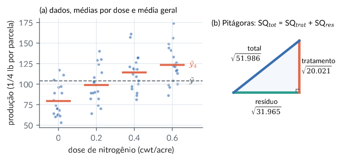
Similaridade cosseno e classificação pelo centróide mais próximo
R/cap01/05_digitos_cosseno.R
# Cap. 1 -- Similaridade cosseno e classificação pelo centróide mais próximo
dig <- read.csv(file.path("dados", "digitos.csv"))
X <- as.matrix(dig[, -1]) # 1797 imagens x 64 pixels
rotulo <- dig$digito
treino <- 1:1200 # partição fixa (igual à do Python)
teste <- 1201:nrow(X)
normalizar <- function(M) M / sqrt(rowSums(M^2)) # cada linha com norma 1
# centróides (médias por classe) no conjunto de treino
centr <- rowsum(X[treino, ], rotulo[treino]) / as.vector(table(rotulo[treino]))
S <- normalizar(centr) %*% t(normalizar(centr)) # matriz de cossenos 10 x 10
round(S[1:4, 1:4], 3)
# classificação: rótulo do centróide de maior cosseno
cos_teste <- normalizar(X[teste, ]) %*% t(normalizar(centr))
pred <- as.integer(colnames(cos_teste)[max.col(cos_teste)])
mean(pred == rotulo[teste]) # acurácia no teste
# matriz de confusão (linhas: verdadeiro; colunas: previsto)
table(verdadeiro = rotulo[teste], previsto = pred)Saída
0 1 2 3
0 1.000 0.716 0.755 0.789
1 0.716 1.000 0.874 0.830
2 0.755 0.874 1.000 0.874
3 0.789 0.830 0.874 1.000
[1] 0.881072
previsto
verdadeiro 0 1 2 3 4 5 6 7 8 9
0 58 0 0 0 1 0 0 0 0 0
1 0 47 0 0 0 1 0 0 1 12
2 1 0 52 6 0 0 0 0 0 1
3 0 1 0 50 0 2 0 4 5 0
4 1 0 0 0 57 0 0 0 3 0
5 0 0 0 0 0 53 1 0 0 5
6 0 2 0 0 0 0 59 0 0 0
7 0 0 0 0 0 0 0 58 3 0
8 0 2 1 0 0 2 0 3 41 6
9 0 0 0 2 0 4 0 1 0 51python/cap01/05_digitos_cosseno.py
"""Cap. 1 -- Similaridade cosseno e classificação pelo centróide mais próximo."""
from pathlib import Path
import numpy as np
import pandas as pd
dig = pd.read_csv(Path(__file__).resolve().parents[2] / "dados" / "digitos.csv")
X = dig.drop(columns="digito").to_numpy(float) # 1797 imagens x 64 pixels
rotulo = dig["digito"].to_numpy()
treino, teste = np.arange(1200), np.arange(1200, len(X)) # partição fixa (igual à do R)
def normalizar(M):
return M / np.linalg.norm(M, axis=1, keepdims=True) # linhas com norma 1
centr = np.vstack([X[treino][rotulo[treino] == k].mean(axis=0) for k in range(10)])
S = normalizar(centr) @ normalizar(centr).T # cossenos 10 x 10
print(np.round(S[:4, :4], 3))
cos_teste = normalizar(X[teste]) @ normalizar(centr).T
pred = cos_teste.argmax(axis=1)
print(f"acurácia no teste: {np.mean(pred == rotulo[teste]):.4f}")
# matriz de confusão (linhas: verdadeiro; colunas: previsto)
conf = pd.crosstab(pd.Series(rotulo[teste], name="verdadeiro"), pd.Series(pred, name="previsto"))
print(conf)Saída
[[1. 0.716 0.755 0.789]
[0.716 1. 0.874 0.83 ]
[0.755 0.874 1. 0.874]
[0.789 0.83 0.874 1. ]]
acurácia no teste: 0.8811
previsto 0 1 2 3 4 5 6 7 8 9
verdadeiro
0 58 0 0 0 1 0 0 0 0 0
1 0 47 0 0 0 1 0 0 1 12
2 1 0 52 6 0 0 0 0 0 1
3 0 1 0 50 0 2 0 4 5 0
4 1 0 0 0 57 0 0 0 3 0
5 0 0 0 0 0 53 1 0 0 5
6 0 2 0 0 0 0 59 0 0 0
7 0 0 0 0 0 0 0 58 3 0
8 0 2 1 0 0 2 0 3 41 6
9 0 0 0 2 0 4 0 1 0 51Figura: digitos cosseno
python/cap01/fig_cap01.py
def fig_digitos():
d = pd.read_csv(DADOS / "digitos.csv")
X = d.drop(columns="digito").to_numpy(float)[:1200]
rot = d["digito"].to_numpy()[:1200]
C = np.vstack([X[rot == k].mean(axis=0) for k in range(10)])
Cn = C / np.linalg.norm(C, axis=1, keepdims=True)
S = Cn @ Cn.T
fig = plt.figure(figsize=(LARG, 2.55))
gs = fig.add_gridspec(2, 9, width_ratios=[1] * 5 + [0.35, 2.6, 0.12, 0.12], hspace=0.05, wspace=0.08)
for k in range(10):
ax = fig.add_subplot(gs[k // 5, k % 5])
ax.imshow(C[k].reshape(8, 8), cmap="Blues", interpolation="nearest")
ax.set_xticks([]); ax.set_yticks([])
ax.set_title(str(k), fontsize=8, pad=2)
for sp in ax.spines.values():
sp.set_visible(False)
ax = fig.add_subplot(gs[:, 6])
im = ax.imshow(S, cmap="Blues", vmin=0.5, vmax=1)
ax.set_xticks(range(10)); ax.set_yticks(range(10))
ax.tick_params(labelsize=7, length=0)
ax.grid(False)
off = S - np.eye(10) * 2
i, j = np.unravel_index(off.argmax(), S.shape)
for a, b in ((i, j), (j, i)):
ax.add_patch(plt.Rectangle((b - 0.5, a - 0.5), 1, 1, fill=False, ec=COR["destaque"], lw=1.5))
ax.set_title("cosseno entre centróides", fontsize=8.5)
cax = fig.add_subplot(gs[:, 8])
cb = fig.colorbar(im, cax=cax)
cb.ax.tick_params(labelsize=6.5)
cb.outline.set_visible(False)
salvar(fig, CAP, "digitos_cosseno")Trecho de python/cap01/fig_cap01.py, que traz também as importações e o estilo.
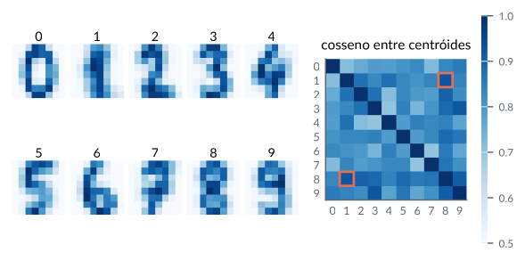
Figura: digitos confusao
python/cap01/fig_cap01.py
def fig_confusao():
d = pd.read_csv(DADOS / "digitos.csv")
X = d.drop(columns="digito").to_numpy(float); r = d["digito"].to_numpy()
C = np.vstack([X[:1200][r[:1200] == k].mean(0) for k in range(10)])
C /= np.linalg.norm(C, axis=1, keepdims=True)
Xt = X[1200:] / np.linalg.norm(X[1200:], axis=1, keepdims=True)
pred = (Xt @ C.T).argmax(1)
M = np.zeros((10, 10), int)
for a, b in zip(r[1200:], pred):
M[a, b] += 1
fig, ax = plt.subplots(figsize=(3.2, 3.0))
ax.imshow(M, cmap="Blues")
for i in range(10):
for j in range(10):
if M[i, j]:
ax.text(j, i, M[i, j], ha="center", va="center", fontsize=6.5,
color="white" if M[i, j] > 30 else "#222")
ax.set_xticks(range(10)); ax.set_yticks(range(10))
ax.set_xlabel("previsto"); ax.set_ylabel("verdadeiro"); ax.grid(False)
ax.tick_params(length=0, labelsize=7)
salvar(fig, CAP, "digitos_confusao")Trecho de python/cap01/fig_cap01.py, que traz também as importações e o estilo.
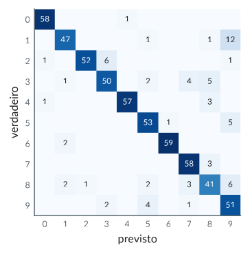
Camadas lineares: composição de funções afins é afim
R/cap01/06_camada_linear.R
# Cap. 1 -- Camadas lineares: composição de funções afins é afim
set.seed(1)
W1 <- matrix(rnorm(4 * 3), 4, 3); b1 <- rnorm(4) # camada 1: R^3 -> R^4
W2 <- matrix(rnorm(2 * 4), 2, 4); b2 <- rnorm(2) # camada 2: R^4 -> R^2
x <- c(1, -2, 0.5)
rede <- function(x) W2 %*% (W1 %*% x + b1) + b2 # duas camadas, sem ativação
W <- W2 %*% W1; b <- W2 %*% b1 + b2 # uma única camada equivalente
cbind(rede(x), W %*% x + b)
# Coordenadas homogêneas: a camada afim vira um produto matricial
aumentar <- function(W, b) rbind(cbind(W, b), c(rep(0, ncol(W)), 1))
M <- aumentar(W2, b2) %*% aumentar(W1, b1)
M %*% c(x, 1) # última coordenada = 1
# Com a ativação ReLU a composição deixa de ser linear
relu <- function(z) pmax(z, 0)
rede_relu <- function(x) W2 %*% relu(W1 %*% x + b1) + b2
cbind(rede_relu(2 * x), 2 * rede_relu(x) - b2) # f(2x) != 2 f(x) - b2 em geralSaída
[,1] [,2]
[1,] 0.2849302 0.2849302
[2,] -2.3857740 -2.3857740
[,1]
[1,] 0.2849302
[2,] -2.3857740
[3,] 1.0000000
[,1] [,2]
[1,] 1.5904532 0.7891571
[2,] -0.5437171 -1.0148629python/cap01/06_camada_linear.py
"""Cap. 1 -- Camadas lineares: composição de funções afins é afim."""
import numpy as np
rng = np.random.default_rng(1)
W1, b1 = rng.normal(size=(4, 3)), rng.normal(size=4) # camada 1: R^3 -> R^4
W2, b2 = rng.normal(size=(2, 4)), rng.normal(size=2) # camada 2: R^4 -> R^2
x = np.array([1.0, -2.0, 0.5])
rede = lambda x: W2 @ (W1 @ x + b1) + b2 # duas camadas, sem ativação
W, b = W2 @ W1, W2 @ b1 + b2 # uma camada equivalente
print(rede(x), W @ x + b)
def aumentar(W, b):
"""Matriz (m+1) x (n+1) que representa x -> Wx + b em coordenadas homogêneas."""
m, n = W.shape
return np.block([[W, b[:, None]], [np.zeros((1, n)), np.ones((1, 1))]])
M = aumentar(W2, b2) @ aumentar(W1, b1)
print(M @ np.append(x, 1)) # última coordenada = 1
relu = lambda z: np.maximum(z, 0)
rede_relu = lambda x: W2 @ relu(W1 @ x + b1) + b2
print(rede_relu(2 * x), 2 * rede_relu(x) - b2) # diferem em geralSaída
[-0.6146549 -2.53256281] [-0.6146549 -2.53256281]
[-0.6146549 -2.53256281 1. ]
[-3.12784869 -0.25798372] [-3.28186729 0.34488932]Figura: camadas lineares
python/cap01/fig_cap01.py
def fig_camadas():
W1 = np.array([[1.2, 0.6], [-0.3, 0.9]])
W2 = np.array([[0.8, -0.7], [0.5, 0.6]])
t = np.linspace(-1, 1, 9)
s = np.linspace(-1, 1, 200)
linhas = [np.column_stack([np.full_like(s, a), s]) for a in t] + \
[np.column_stack([s, np.full_like(s, a)]) for a in t]
circ = np.column_stack([np.cos(np.linspace(0, 2 * np.pi, 300)), np.sin(np.linspace(0, 2 * np.pi, 300))])
mapas = [
(r"entrada $\mathbf{x}$", lambda P: P),
(r"$\mathbf{W}_1\mathbf{x}$", lambda P: P @ W1.T),
(r"$\mathbf{W}_2\mathbf{W}_1\mathbf{x}$", lambda P: P @ (W2 @ W1).T),
(r"$\mathrm{ReLU}(\mathbf{W}_1\mathbf{x})$", lambda P: np.maximum(P @ W1.T, 0)),
]
fig, eixos = plt.subplots(1, 4, figsize=(LARG, 1.6))
for ax, (tit, f) in zip(eixos, mapas):
for L in linhas:
Q = f(L)
ax.plot(Q[:, 0], Q[:, 1], color=CATEG[0], lw=0.5, alpha=0.6)
Q = f(circ)
ax.plot(Q[:, 0], Q[:, 1], color=CATEG[1], lw=1.6)
for e, cor in ((np.array([1.0, 0]), CATEG[2]), (np.array([0, 1.0]), CATEG[3])):
fe = f(e[None, :])[0]
seta(ax, (0, 0), tuple(fe), cor)
ax.set_title(tit, fontsize=8.5)
ax.set_xlim(-2, 2); ax.set_ylim(-2, 2)
ax.set_aspect("equal"); ax.set_xticks([]); ax.set_yticks([])
ax.axhline(0, color="#BBB", lw=0.5); ax.axvline(0, color="#BBB", lw=0.5)
ax.grid(False)
for sp in ax.spines.values():
sp.set_visible(False)
fig.tight_layout(w_pad=0.6)
salvar(fig, CAP, "camadas_lineares")Trecho de python/cap01/fig_cap01.py, que traz também as importações e o estilo.
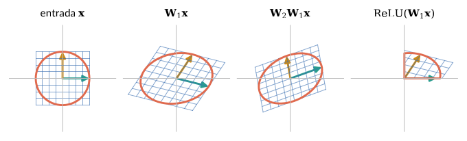
Índices de preços de Laspeyres, Paasche e Fisher como razões de produtos internos
R/cap01/07_indices_precos.R
# Cap. 1 -- Índices de preços de Laspeyres, Paasche e Fisher como razões de produtos internos
cesta <- data.frame(
bem = c("arroz", "feijão", "carne", "leite", "pão"),
p0 = c(5.20, 8.90, 38.50, 4.60, 12.00), # preços no período base (R$/unidade)
p1 = c(6.10, 8.10, 44.90, 5.30, 13.20), # preços no período atual
q0 = c(10, 4, 6, 20, 8), # quantidades no período base
q1 = c(11, 5, 4.5, 19, 8) # quantidades no período atual
)
ip <- function(p, q) sum(p * q) # produto interno <p, q>
laspeyres <- ip(cesta$p1, cesta$q0) / ip(cesta$p0, cesta$q0)
paasche <- ip(cesta$p1, cesta$q1) / ip(cesta$p0, cesta$q1)
fisher <- sqrt(laspeyres * paasche)
round(c(Laspeyres = laspeyres, Paasche = paasche, Fisher = fisher), 4)
# Laspeyres como média dos relativos de preço com pesos de dispêndio
w <- cesta$p0 * cesta$q0 / ip(cesta$p0, cesta$q0)
data.frame(bem = cesta$bem, peso = round(w, 3), relativo = round(cesta$p1 / cesta$p0, 3))
sum(w * cesta$p1 / cesta$p0) # = LaspeyresSaída
Laspeyres Paasche Fisher
1.1338 1.1257 1.1297
bem peso relativo
1 arroz 0.103 1.173
2 feijão 0.070 0.910
3 carne 0.456 1.166
4 leite 0.182 1.152
5 pão 0.189 1.100
[1] 1.133833python/cap01/07_indices_precos.py
"""Cap. 1 -- Índices de Laspeyres, Paasche e Fisher como razões de produtos internos."""
import numpy as np
import pandas as pd
cesta = pd.DataFrame({
"bem": ["arroz", "feijão", "carne", "leite", "pão"],
"p0": [5.20, 8.90, 38.50, 4.60, 12.00], # preços no período base (R$/unidade)
"p1": [6.10, 8.10, 44.90, 5.30, 13.20], # preços no período atual
"q0": [10, 4, 6, 20, 8], # quantidades no período base
"q1": [11, 5, 4.5, 19, 8], # quantidades no período atual
})
p0, p1, q0, q1 = (cesta[c].to_numpy(float) for c in ("p0", "p1", "q0", "q1"))
laspeyres = (p1 @ q0) / (p0 @ q0)
paasche = (p1 @ q1) / (p0 @ q1)
fisher = np.sqrt(laspeyres * paasche)
print(f"Laspeyres = {laspeyres:.4f}, Paasche = {paasche:.4f}, Fisher = {fisher:.4f}")
w = p0 * q0 / (p0 @ q0) # pesos de dispêndio no período base
print(pd.DataFrame({"bem": cesta["bem"], "peso": w.round(3), "relativo": (p1 / p0).round(3)}))
print(w @ (p1 / p0)) # = LaspeyresSaída
Laspeyres = 1.1338, Paasche = 1.1257, Fisher = 1.1297
bem peso relativo
0 arroz 0.103 1.173
1 feijão 0.070 0.910
2 carne 0.456 1.166
3 leite 0.182 1.152
4 pão 0.189 1.100
1.1338333991314646Figura: precos
python/cap01/fig_cap01.py
def fig_precos():
from matplotlib.ticker import FuncFormatter
fmt = FuncFormatter(lambda v, _: f"{v:.10g}".replace(".", ",").replace("-", "−"))
bens = ["arroz", "feijão", "carne", "leite", "pão"]
p0 = np.array([5.20, 8.90, 38.50, 4.60, 12.00]); p1 = np.array([6.10, 8.10, 44.90, 5.30, 13.20])
q0 = np.array([10, 4, 6, 20, 8.0]); q1 = np.array([11, 5, 4.5, 19, 8])
w = p0 * q0 / (p0 @ q0); r = 100 * (p1 / p0 - 1); L = 100 * ((p1 @ q0) / (p0 @ q0) - 1)
fig, (a1, a2) = plt.subplots(1, 2, figsize=(LARG, 2.6))
x0 = np.r_[0, np.cumsum(w)[:-1]]
for k in range(5):
a1.bar(x0[k], r[k], width=w[k], align="edge", color=CATEG[k % 5], alpha=0.8, edgecolor="white")
a1.text(x0[k] + w[k] / 2, r[k] + (1 if r[k] > 0 else -3), bens[k], ha="center", fontsize=6.5)
a1.axhline(L, color=COR["cinza"], ls="--", lw=1)
a1.text(0.98, -11, f"tracejado: Laspeyres = {L:.1f}%".replace(".", ","), ha="right", fontsize=6.5, color=COR["cinza"])
a1.set_ylim(-13, 22)
a1.axhline(0, color="black", lw=0.6)
a1.set_xlim(0, 1); a1.set_xlabel("peso no dispêndio do período base"); a1.set_ylabel("variação do preço (%)")
a1.set_title("(a) área = contribuição à inflação", fontsize=8.5, loc="left")
a1.xaxis.set_major_formatter(fmt); a1.yaxis.set_major_formatter(fmt)
dq = 100 * (q1 / q0 - 1)
a2.axhline(0, color=COR["cinza"], lw=0.6); a2.axvline(0, color=COR["cinza"], lw=0.6)
for k in range(5):
a2.plot(r[k], dq[k], "o", ms=5, color=CATEG[k % 5])
a2.annotate(bens[k], (r[k], dq[k]), xytext=(4, 3), textcoords="offset points", fontsize=6.5)
a2.set_xlabel("variação do preço (%)"); a2.set_ylabel("variação da quantidade (%)")
a2.set_title("(b) substituição", fontsize=8.5, loc="left")
a2.xaxis.set_major_formatter(fmt); a2.yaxis.set_major_formatter(fmt)
fig.tight_layout(); salvar(fig, CAP, "precos")Trecho de python/cap01/fig_cap01.py, que traz também as importações e o estilo.
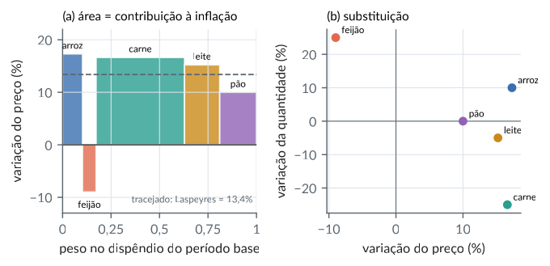
Retorno da educação: regressão simples como projeção ortogonal
R/cap01/08_retorno_educacao.R
# Cap. 1 -- Retorno da educação: regressão simples como projeção ortogonal
dados <- read.csv(file.path("dados", "wage1.csv"))
y <- log(dados$wage)
x <- dados$educ
n <- length(y)
# Base ortogonal de span{1, x}: u1 = 1 e u2 = x - média(x) (Gram-Schmidt)
u1 <- rep(1, n)
u2 <- x - mean(x)
proj <- function(v, u) sum(v * u) / sum(u * u) * u
y_hat <- proj(y, u1) + proj(y, u2) # projeção sobre span{1, x}
b1 <- sum(y * u2) / sum(u2 * u2) # inclinação
b0 <- mean(y) - b1 * mean(x) # intercepto
c(b0 = b0, b1 = b1, retorno_pct = 100 * (exp(b1) - 1))
# Pitágoras e R^2 = cos^2(ângulo entre os vetores centrados)
sq_tot <- sum((y - mean(y))^2); sq_reg <- sum((y_hat - mean(y))^2)
c(R2 = sq_reg / sq_tot, cor2 = cor(x, y)^2)
coef(lm(y ~ x)) # conferênciaSaída
b0 b1 retorno_pct
0.58377267 0.08274437 8.62640869
R2 cor2
0.1858065 0.1858065
(Intercept) x
0.58377267 0.08274437python/cap01/08_retorno_educacao.py
"""Cap. 1 -- Retorno da educação: regressão simples como projeção ortogonal."""
from pathlib import Path
import numpy as np
import pandas as pd
dados = pd.read_csv(Path(__file__).resolve().parents[2] / "dados" / "wage1.csv")
y = np.log(dados["wage"].to_numpy())
x = dados["educ"].to_numpy(float)
u1 = np.ones_like(x) # base ortogonal de span{1, x}
u2 = x - x.mean()
proj = lambda v, u: (v @ u) / (u @ u) * u
y_hat = proj(y, u1) + proj(y, u2)
b1 = (y @ u2) / (u2 @ u2)
b0 = y.mean() - b1 * x.mean()
print(f"b0 = {b0:.4f}, b1 = {b1:.4f}, retorno = {100 * (np.exp(b1) - 1):.2f}% ao ano")
sq_tot = np.sum((y - y.mean()) ** 2)
sq_reg = np.sum((y_hat - y.mean()) ** 2)
print(f"R2 = {sq_reg / sq_tot:.4f}, cor^2 = {np.corrcoef(x, y)[0, 1] ** 2:.4f}")
print(np.polyfit(x, y, 1)[::-1]) # conferência: (b0, b1)Saída
b0 = 0.5838, b1 = 0.0827, retorno = 8.63% ao ano
R2 = 0.1858, cor^2 = 0.1858
[0.58377267 0.08274437]Figura: salario regressao
python/cap01/fig_cap01.py
def fig_salario():
d = pd.read_csv(DADOS / "wage1.csv")
y = np.log(d["wage"].to_numpy()); x = d["educ"].to_numpy(float)
b1 = ((x - x.mean()) @ (y - y.mean())) / ((x - x.mean()) @ (x - x.mean()))
b0 = y.mean() - b1 * x.mean()
rng = np.random.default_rng(5)
fig, (a1, a2) = plt.subplots(1, 2, figsize=(LARG, 2.4), gridspec_kw={"width_ratios": [1.5, 1]})
a1.scatter(x + rng.uniform(-0.25, 0.25, len(x)), y, s=5, alpha=0.4, color=CATEG[0], lw=0)
xs = np.linspace(0, 18, 50)
a1.plot(xs, b0 + b1 * xs, color=CATEG[1], lw=2)
a1.text(1, 2.9, f"$\\hat y = {b0:.3f} + {b1:.4f}\\,x$", fontsize=8, color="#333")
a1.set_xlabel("anos de escolaridade"); a1.set_ylabel("log(salário-hora)")
a1.set_title("(a) dados e reta de mínimos quadrados", fontsize=8.5, loc="left")
r = np.corrcoef(x, y)[0, 1]; th = np.arccos(r)
seta(a2, (0, 0), (np.cos(th), np.sin(th)), CATEG[0])
seta(a2, (0, 0), (np.cos(th), 0), CATEG[1])
a2.plot([np.cos(th), np.cos(th)], [0, np.sin(th)], color=CATEG[2], lw=1.6, ls="--")
a2.plot([np.cos(th) - 0.05, np.cos(th) - 0.05, np.cos(th)], [0, 0.05, 0.05], color="#666", lw=0.7)
a2.text(np.cos(th) / 2 - 0.05, np.sin(th) / 2 + 0.05, r"$\mathbf{y}-\bar y\mathbf{1}$", fontsize=8, ha="right")
a2.text(np.cos(th) / 2, -0.09, r"$\hat{\mathbf{y}}-\bar y\mathbf{1}$", fontsize=8, ha="center", va="top")
a2.text(np.cos(th) + 0.04, np.sin(th) / 2, "resíduo", fontsize=8, va="center")
a2.text(0.16, 0.05, f"{np.degrees(th):.1f}°", fontsize=7.5)
a2.text(0.0, 1.07, f"$R^2=\\cos^2\\theta={r**2:.3f}$", fontsize=8)
a2.set_xlim(-0.1, 1.0); a2.set_ylim(-0.25, 1.15); a2.set_aspect("equal"); a2.axis("off")
a2.set_title("(b) geometria (vetores normalizados)", fontsize=8.5, loc="left")
fig.tight_layout()
salvar(fig, CAP, "salario_regressao")Trecho de python/cap01/fig_cap01.py, que traz também as importações e o estilo.
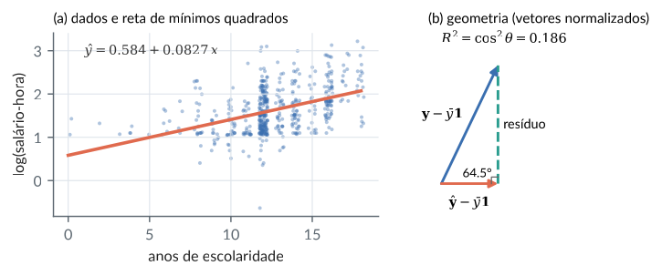
A média móvel como operador linear: núcleo, imagem e sazonalidade
R/cap01/09_media_movel.R
# Cap. 1 -- A média móvel como operador linear: núcleo, imagem e sazonalidade
gas <- read.csv(file.path("dados", "ukgas.csv"))
y <- log(gas$consumo) # log torna a sazonalidade aditiva
n <- length(y) # 108 trimestres (1960-1986)
# Matriz (n-3) x n da média móvel de 4 termos: (My)_t = (y_t + ... + y_{t+3}) / 4
media_movel <- function(n, k = 4) {
M <- matrix(0, n - k + 1, n)
for (t in 1:(n - k + 1)) M[t, t:(t + k - 1)] <- 1 / k
M
}
M <- media_movel(n)
M[1:3, 1:6]
# Núcleo: padrões de período 4 com soma zero são anulados
s <- rep(c(0.5, -0.2, -0.6, 0.3), length.out = n) # padrão sazonal (soma 0)
max(abs(M %*% s)) # ~ 0
qrM <- qr(M)
c(dim_imagem = qrM$rank, dim_nucleo = n - qrM$rank) # 105 + 3 = 108
# Tendência (média móvel) e componente sazonal estimada
tendencia <- M %*% y
desvio <- y[2:(n - 2)] - tendencia # alinhado (aprox.) ao centro da janela
tri <- gas$trimestre[2:(n - 2)]
sazonal <- tapply(desvio, tri, mean)
round(sazonal - mean(sazonal), 3) # efeito médio de cada trimestreSaída
[,1] [,2] [,3] [,4] [,5] [,6]
[1,] 0.25 0.25 0.25 0.25 0.00 0.00
[2,] 0.00 0.25 0.25 0.25 0.25 0.00
[3,] 0.00 0.00 0.25 0.25 0.25 0.25
[1] 2.775558e-17
dim_imagem dim_nucleo
105 3
1 2 3 4
0.440 0.015 -0.547 0.092python/cap01/09_media_movel.py
"""Cap. 1 -- A média móvel como operador linear: núcleo, imagem e sazonalidade."""
from pathlib import Path
import numpy as np
import pandas as pd
gas = pd.read_csv(Path(__file__).resolve().parents[2] / "dados" / "ukgas.csv")
y = np.log(gas["consumo"].to_numpy())
n = len(y)
def media_movel(n, k=4):
"""Matriz (n-k+1) x n da média móvel de k termos."""
M = np.zeros((n - k + 1, n))
for t in range(n - k + 1):
M[t, t:t + k] = 1 / k
return M
M = media_movel(n)
print(M[:3, :6])
s = np.resize([0.5, -0.2, -0.6, 0.3], n) # padrão sazonal de soma zero
print(np.abs(M @ s).max()) # ~ 0
posto = np.linalg.matrix_rank(M)
print(f"dim imagem = {posto}, dim núcleo = {n - posto}")
tendencia = M @ y
desvio = y[1:n - 2] - tendencia
tri = gas["trimestre"].to_numpy()[1:n - 2]
sazonal = np.array([desvio[tri == q].mean() for q in range(1, 5)])
print(np.round(sazonal - sazonal.mean(), 3))Saída
[[0.25 0.25 0.25 0.25 0. 0. ]
[0. 0.25 0.25 0.25 0.25 0. ]
[0. 0. 0.25 0.25 0.25 0.25]]
0.0
dim imagem = 105, dim núcleo = 3
[ 0.44 0.015 -0.547 0.092]Figura: media movel
python/cap01/fig_cap01.py
def fig_media_movel():
g = pd.read_csv(DADOS / "ukgas.csv")
y = np.log(g["consumo"].to_numpy()); n = len(y)
t = g["ano"].to_numpy() + (g["trimestre"].to_numpy() - 1) / 4
tend = np.convolve(y, np.ones(4) / 4, mode="valid")
tc = t[:n - 3] + 1.5 / 4
desv = y[1:n - 2] - tend
tri = g["trimestre"].to_numpy()[1:n - 2]
saz = np.array([desv[tri == q].mean() for q in range(1, 5)]); saz -= saz.mean()
fig, (a1, a2) = plt.subplots(1, 2, figsize=(LARG, 2.3), gridspec_kw={"width_ratios": [2, 1]})
a1.plot(t, y, color=CATEG[0], lw=1, label="log(consumo)")
a1.plot(tc, tend, color=CATEG[1], lw=2, label="média móvel ($\\mathbf{M}\\mathbf{y}$)")
a1.set_xlabel("ano"); a1.set_ylabel("log(milhões de termias)")
a1.legend(fontsize=7, loc="upper left")
a1.set_title("(a) série e tendência", fontsize=8.5, loc="left")
a2.bar(range(1, 5), saz, color=CATEG[2], width=0.6)
a2.axhline(0, color="#999", lw=0.6)
a2.set_xticks(range(1, 5), ["T1", "T2", "T3", "T4"])
a2.set_ylabel("efeito sazonal (log)")
a2.set_title("(b) padrão no núcleo de $\\mathbf{M}$", fontsize=8.5, loc="left")
fig.tight_layout()
salvar(fig, CAP, "media_movel")Trecho de python/cap01/fig_cap01.py, que traz também as importações e o estilo.
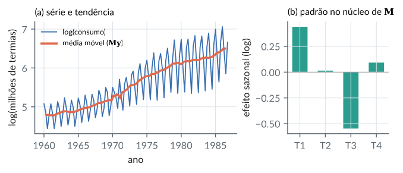
Decomposição da SQ de tratamentos em contrastes polinomiais ortogonais
R/cap01/10_contrastes_nitrogenio.R
# Cap. 1 -- Decomposição da SQ de tratamentos em contrastes polinomiais ortogonais
aveia <- read.csv(file.path("dados", "yates_oats.csv"))
y <- aveia$yield
dose <- factor(aveia$nitro)
medias <- tapply(y, dose, mean)
r <- 18 # parcelas por dose
# Coeficientes linear, quadrático e cúbico (Gram-Schmidt em 1, t, t^2, t^3)
C <- cbind(linear = c(-3, -1, 1, 3), quadratico = c(1, -1, -1, 1), cubico = c(-1, 3, -3, 1))
crossprod(C) # ortogonais entre si e a (1,1,1,1)
# Cada contraste c define a direção sum_j c_j d_j em R^72; a projeção de y sobre ela
# tem comprimento ao quadrado r (c'm)^2 / c'c
sq <- apply(C, 2, function(c) r * sum(c * medias)^2 / sum(c^2))
round(cbind(SQ = sq, fracao = sq / sum(sq)), 4)
sum(sq) # = SQ de tratamentos (20020.5)Saída
linear quadratico cubico
linear 20 0 0
quadratico 0 4 0
cubico 0 0 20
SQ fracao
linear 19536.4 0.9758
quadratico 480.5 0.0240
cubico 3.6 0.0002
[1] 20020.5python/cap01/10_contrastes_nitrogenio.py
"""Cap. 1 -- Decomposição da SQ de tratamentos em contrastes polinomiais ortogonais."""
from pathlib import Path
import numpy as np
import pandas as pd
aveia = pd.read_csv(Path(__file__).resolve().parents[2] / "dados" / "yates_oats.csv")
medias = aveia.groupby("nitro")["yield"].mean().to_numpy()
r = 18
C = np.array([[-3, -1, 1, 3], # linear
[1, -1, -1, 1], # quadrático
[-1, 3, -3, 1]]).T # cúbico
print(C.T @ C)
sq = r * (C.T @ medias) ** 2 / (C ** 2).sum(axis=0)
for nome, v in zip(["linear", "quadrático", "cúbico"], sq):
print(f"{nome:<11} SQ = {v:9.2f} fração = {v / sq.sum():.4f}")
print(sq.sum())Saída
[[20 0 0]
[ 0 4 0]
[ 0 0 20]]
linear SQ = 19536.40 fração = 0.9758
quadrático SQ = 480.50 fração = 0.0240
cúbico SQ = 3.60 fração = 0.0002
20020.499999999985Figura: aveia contrastes
python/cap01/fig_cap01.py
def fig_contrastes():
d = pd.read_csv(DADOS / "yates_oats.csv")
doses = np.sort(d["nitro"].unique())
m = d.groupby("nitro")["yield"].mean().reindex(doses).to_numpy()
C = np.array([[-3, -1, 1, 3], [1, -1, -1, 1], [-1, 3, -3, 1]]).T
sq = 18 * (C.T @ m) ** 2 / (C ** 2).sum(axis=0)
fig, (a1, a2) = plt.subplots(1, 2, figsize=(LARG, 2.3), gridspec_kw={"width_ratios": [1.4, 1]})
a1.plot(doses, m, "o", color=CATEG[0], ms=6, label="médias por dose", zorder=3)
xs = np.linspace(0, 0.6, 100)
for grau, cor, ls in ((1, CATEG[1], "-"), (2, CATEG[2], "--")):
c = np.polyfit(doses, m, grau)
a1.plot(xs, np.polyval(c, xs), color=cor, ls=ls, lw=1.6, label=f"ajuste de grau {grau}")
a1.set_xlabel("dose de nitrogênio (cwt/acre)"); a1.set_ylabel("produção média")
a1.legend(fontsize=7)
a1.set_title("(a) curva de resposta", fontsize=8.5, loc="left")
nomes = ["linear", "quadrático", "cúbico"]
a2.barh(nomes[::-1], sq[::-1], color=[CATEG[3], CATEG[2], CATEG[1]], height=0.55)
for i, v in enumerate(sq[::-1]):
a2.text(v + 300, i, f"{v:,.1f}".replace(",", "X").replace(".", ",").replace("X", "."), va="center", fontsize=7)
a2.set_xlim(0, 26000); a2.set_xlabel("soma de quadrados")
a2.set_title("(b) SQ$_{trat}$ = soma de 3 projeções", fontsize=8.5, loc="left")
fig.tight_layout()
salvar(fig, CAP, "aveia_contrastes")Trecho de python/cap01/fig_cap01.py, que traz também as importações e o estilo.
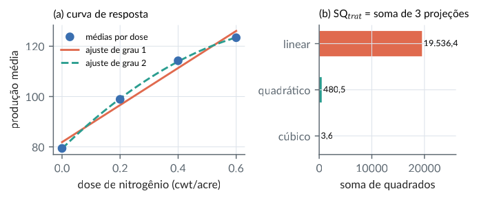
Uma rede linear de duas camadas treinada por gradiente aprende
R/cap01/11_rede_linear.R
# Cap. 1 -- Uma rede linear de duas camadas treinada por gradiente aprende
# a mesma função que a regressão de mínimos quadrados
set.seed(42)
n <- 500; p <- 5; h <- 8
X <- matrix(rnorm(n * p), n, p)
beta <- c(2, -1, 0.5, 0, 3)
y <- X %*% beta + rnorm(n, sd = 0.5)
W1 <- matrix(rnorm(h * p, sd = 0.3), h, p) # camada 1: R^5 -> R^8
w2 <- matrix(rnorm(h, sd = 0.3), 1, h) # camada 2: R^8 -> R
eta <- 0.02
for (it in 1:3000) {
r <- X %*% t(W1) %*% t(w2) - y # resíduos (n x 1)
g_prod <- t(X) %*% r / n # gradiente em relação a W = w2 W1
g_w2 <- t(g_prod) %*% t(W1) # regra da cadeia
g_W1 <- t(w2) %*% t(g_prod)
w2 <- w2 - eta * g_w2
W1 <- W1 - eta * g_W1
}
rbind(rede = as.vector(w2 %*% W1), # produto das camadas
mqo = coef(lm(y ~ X - 1)))Saída
X1 X2 X3 X4 X5
rede 1.986329 -1.002745 0.5271107 0.02338661 3.010954
mqo 1.986329 -1.002745 0.5271107 0.02338661 3.010954python/cap01/11_rede_linear.py
"""Cap. 1 -- Uma rede linear de duas camadas treinada por gradiente aprende
a mesma função que a regressão de mínimos quadrados."""
import numpy as np
rng = np.random.default_rng(42)
n, p, h = 500, 5, 8
X = rng.normal(size=(n, p))
beta = np.array([2, -1, 0.5, 0, 3])
y = X @ beta + rng.normal(scale=0.5, size=n)
W1 = rng.normal(scale=0.3, size=(h, p)) # camada 1: R^5 -> R^8
w2 = rng.normal(scale=0.3, size=(1, h)) # camada 2: R^8 -> R
eta = 0.02
for it in range(3000):
r = X @ (w2 @ W1).ravel() - y # resíduos
g_prod = (X.T @ r / n)[None, :] # gradiente em relação a W = w2 W1
g_w2, g_W1 = g_prod @ W1.T, w2.T @ g_prod # regra da cadeia
w2, W1 = w2 - eta * g_w2, W1 - eta * g_W1
mqo = np.linalg.lstsq(X, y, rcond=None)[0]
print("rede:", np.round((w2 @ W1).ravel(), 4))
print("mqo: ", np.round(mqo, 4))Saída
rede: [ 2.036 -0.9854 0.4836 -0.0146 3.0184]
mqo: [ 2.036 -0.9854 0.4836 -0.0146 3.0184]Figura: rede linear
python/cap01/fig_cap01.py
def fig_rede_linear():
rng = np.random.default_rng(42)
n, p, h = 500, 5, 8
X = rng.normal(size=(n, p)); beta = np.array([2, -1, 0.5, 0, 3])
y = X @ beta + rng.normal(scale=0.5, size=n)
mqo = np.linalg.lstsq(X, y, rcond=None)[0]
W1 = rng.normal(scale=0.3, size=(h, p)); w2 = rng.normal(scale=0.3, size=(1, h))
hist, perda = [], []
for it in range(3000):
W = (w2 @ W1).ravel(); hist.append(W); res = X @ W - y
perda.append(0.5 * np.mean(res ** 2))
g = (X.T @ res / n)[None, :]
w2, W1 = w2 - 0.02 * (g @ W1.T), W1 - 0.02 * (w2.T @ g)
hist = np.array(hist)
fig, (a1, a2) = plt.subplots(1, 2, figsize=(LARG, 2.2))
p_mqo = 0.5 * np.mean((X @ mqo - y) ** 2)
it = np.arange(1, len(perda) + 1)
a1.loglog(it, np.array(perda) - p_mqo, color=CATEG[0])
a1.set_xlabel("iteração"); a1.set_ylabel("perda $-$ perda mínima (MQO)")
a1.set_title("(a) excesso de perda", fontsize=8.5, loc="left")
for j in range(p):
a2.semilogx(it, hist[:, j], color=CATEG[j % 5], lw=1.4)
a2.axhline(mqo[j], color=CATEG[j % 5], ls=":", lw=0.9)
a2.text(3600, mqo[j], f"$\\hat\\beta_{j+1}$", fontsize=7, va="center", color="#333")
a2.set_xlim(1, 9000); a2.set_xlabel("iteração")
a2.set_ylabel(r"entradas de $\mathbf{w}_2\mathbf{W}_1$")
a2.set_title("(b) produto das camadas → MQO", fontsize=8.5, loc="left")
fig.tight_layout()
salvar(fig, CAP, "rede_linear")Trecho de python/cap01/fig_cap01.py, que traz também as importações e o estilo.
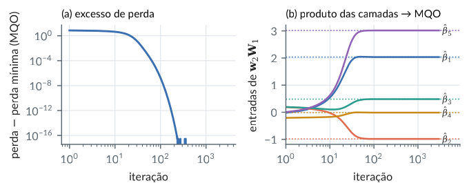
Representação matricial do operador derivada em P_3 e mudança de base
R/cap01/12_operador_derivada.R
# Cap. 1 -- Representação matricial do operador derivada em P_3 e mudança de base
# Base canônica B = (1, t, t^2, t^3): coordenadas de p(t) = c0 + c1 t + c2 t^2 + c3 t^3
D <- matrix(0, 4, 4)
for (k in 1:3) D[k, k + 1] <- k # d/dt t^k = k t^(k-1)
D
p <- c(1, -2, 0, 5) # p(t) = 1 - 2t + 5t^3
D %*% p # p'(t) = -2 + 15 t^2
D %*% D %*% p # p''(t) = 30 t
D %*% D %*% D %*% D # D^4 = 0 (nilpotente)
# Núcleo e imagem: dim N(D) = 1 (constantes), dim Im(D) = 3 (polinômios de grau <= 2)
c(dim_imagem = qr(D)$rank, dim_nucleo = 4 - qr(D)$rank)
# Mudança de base: B' = (1, t-1, (t-1)^2, (t-1)^3); colunas de P = coordenadas de B' em B
P <- cbind(c(1, 0, 0, 0), c(-1, 1, 0, 0), c(1, -2, 1, 0), c(-1, 3, -3, 1))
Pinv <- solve(P) # coordenadas de B em B'
Pinv %*% D %*% P # matriz de D na base B'Saída
[,1] [,2] [,3] [,4]
[1,] 0 1 0 0
[2,] 0 0 2 0
[3,] 0 0 0 3
[4,] 0 0 0 0
[,1]
[1,] -2
[2,] 0
[3,] 15
[4,] 0
[,1]
[1,] 0
[2,] 30
[3,] 0
[4,] 0
[,1] [,2] [,3] [,4]
[1,] 0 0 0 0
[2,] 0 0 0 0
[3,] 0 0 0 0
[4,] 0 0 0 0
dim_imagem dim_nucleo
3 1
[,1] [,2] [,3] [,4]
[1,] 0 1 0 0
[2,] 0 0 2 0
[3,] 0 0 0 3
[4,] 0 0 0 0python/cap01/12_operador_derivada.py
"""Cap. 1 -- Representação matricial do operador derivada em P_3 e mudança de base."""
import numpy as np
D = np.zeros((4, 4))
for k in range(1, 4):
D[k - 1, k] = k # d/dt t^k = k t^(k-1)
print(D)
p = np.array([1, -2, 0, 5]) # p(t) = 1 - 2t + 5t^3
print(D @ p, D @ D @ p) # p' e p''
print(np.linalg.matrix_power(D, 4)) # D^4 = 0
posto = np.linalg.matrix_rank(D)
print(f"dim imagem = {posto}, dim núcleo = {4 - posto}")
P = np.array([[1, -1, 1, -1], # colunas: 1, t-1, (t-1)^2, (t-1)^3
[0, 1, -2, 3],
[0, 0, 1, -3],
[0, 0, 0, 1]], dtype=float)
print(np.linalg.solve(P, D @ P)) # P^{-1} D PSaída
[[0. 1. 0. 0.]
[0. 0. 2. 0.]
[0. 0. 0. 3.]
[0. 0. 0. 0.]]
[-2. 0. 15. 0.] [ 0. 30. 0. 0.]
[[0. 0. 0. 0.]
[0. 0. 0. 0.]
[0. 0. 0. 0.]
[0. 0. 0. 0.]]
dim imagem = 3, dim núcleo = 1
[[0. 1. 0. 0.]
[0. 0. 2. 0.]
[0. 0. 0. 3.]
[0. 0. 0. 0.]]Modelos de linguagem pela álgebra linear: tokens (BPE), embeddings e busca por similaridade
R/cap01/13_linguagem.R
# Cap. 1 -- Modelos de linguagem pela álgebra linear: tokens (BPE), embeddings e busca por similaridade
d <- read.csv(file.path("dados", "austen.csv"))
palavras <- function(txt) unlist(regmatches(tolower(txt), gregexpr("[a-z]+", tolower(txt))))
# (1) Tokenização por pares de bytes (BPE), treinada em Orgulho e Preconceito
pp <- palavras(d$texto[d$livro == "Pride & Prejudice"])
freq <- table(pp); freq <- freq[freq >= 2] # tipos que aparecem 2+ vezes
f <- as.numeric(freq)
# cada palavra vira uma cadeia de símbolos separados por espaços; "_" marca o fim da palavra
w <- paste0(" ", gsub("(.)", "\\1 ", names(freq)), "_ ")
fundir <- function(w, a, b) # substitui o par (a, b) pelo símbolo ab
gsub(paste0("(?<= )", a, " ", b, "(?= )"), paste0(a, b), w, perl = TRUE)
regras <- character(0)
for (k in 1:200) {
s <- strsplit(trimws(w), " ")
n <- lengths(s)
a <- unlist(lapply(s, function(x) x[-length(x)])); b <- unlist(lapply(s, function(x) x[-1]))
cont <- rowsum(rep(f, n - 1), paste(a, b)) # frequência de cada par adjacente
ordem <- order(-cont[, 1], rownames(cont), method = "radix") # empates: ordem lexicográfica
par <- strsplit(rownames(cont)[ordem[1]], " ")[[1]]
regras <- c(regras, paste(par, collapse = " "))
w <- fundir(w, par[1], par[2])
}
head(regras, 12)
tail(regras, 6)
vocab <- sort(unique(c(unlist(strsplit(trimws(w), " ")), letters, "_")), method = "radix")
length(vocab)
tokenizar <- function(p) {
x <- paste0(" ", gsub("(.)", "\\1 ", p), "_ ")
for (r in strsplit(regras, " ")) x <- fundir(x, r[1], r[2])
strsplit(trimws(x), " ")[[1]]
}
frase <- "the unbelievably proud gentleman danced reluctantly"
toks <- unlist(lapply(palavras(frase), tokenizar))
toks
c(palavras = length(palavras(frase)), tokens = length(toks), caracteres = nchar(frase))
# (2) Embeddings: a consulta a uma tabela é um produto pela matriz one-hot
source(file.path("R", "comum", "gerador.R")); g <- gerador(1)
V <- length(vocab); dm <- 8
E <- matriz_normal(g, V, dm) # matriz de embeddings (V x d)
ids <- match(toks, vocab) # índices dos tokens
O <- matrix(0, length(ids), V); O[cbind(seq_along(ids), ids)] <- 1
c(V = V, d = dm, erro_OE_vs_indices = max(abs(O %*% E - E[ids, ])))
# (3) Busca por similaridade (a etapa de recuperação de um RAG): capítulos como vetores TF-IDF
cap <- ave(as.numeric(grepl("^chapter [0-9ivxlc]+", d$texto, ignore.case = TRUE)), d$livro, FUN = cumsum)
doc <- paste(d$livro, "- cap.", cap)[cap > 0]
txt <- tapply(d$texto[cap > 0], factor(doc, levels = unique(doc)), paste, collapse = " ")
tok <- lapply(txt, palavras)
termos <- sort(unique(unlist(tok)), method = "radix")
tf <- t(sapply(tok, function(w) tabulate(match(w, termos), length(termos))))
idf <- log(nrow(tf) / colSums(tf > 0))
X <- sweep(tf, 2, idf, "*")
X <- X / sqrt(rowSums(X^2)) # linhas de norma 1
dim(X)
consulta <- "a ball at netherfield where elizabeth dances with darcy"
q <- tabulate(match(palavras(consulta), termos), length(termos)) * idf
q <- q / sqrt(sum(q^2))
cosseno <- drop(X %*% q)
round(head(sort(cosseno, decreasing = TRUE), 4), 3)Saída
[1] "e _" "t h" "d _" "t _" "s _" "e r" "i n" "y _" "a n" "o _"
[11] "o u" "er _"
[1] "wi ll_" "th ing_" "p re" "an y_" "ar e_" "t ed_"
[1] 224
[1] "the_" "un" "b" "eli" "e" "v" "ab" "ly_" "p" "r"
[11] "ou" "d_" "g" "ent" "le" "m" "an_" "d" "an" "c"
[21] "ed_" "re" "l" "u" "c" "t" "an" "t" "ly_"
palavras tokens caracteres
6 29 51
V d erro_OE_vs_indices
224 8 0
[1] 269 13727
Pride & Prejudice - cap. 17 Pride & Prejudice - cap. 18
0.348 0.323
Pride & Prejudice - cap. 44 Pride & Prejudice - cap. 11
0.252 0.250python/cap01/13_linguagem.py
"""Cap. 1 -- Modelos de linguagem pela álgebra linear: tokens (BPE), embeddings e busca por similaridade."""
import re
import sys
from collections import Counter
from pathlib import Path
import numpy as np
import pandas as pd
sys.path.insert(0, str(Path(__file__).resolve().parents[1]))
from comum.gerador import Gerador # noqa: E402
d = pd.read_csv(Path(__file__).resolve().parents[2] / "dados" / "austen.csv", keep_default_na=False)
palavras = lambda txt: re.findall(r"[a-z]+", txt.lower())
# (1) BPE treinado em Orgulho e Preconceito
pp = palavras(" ".join(d.loc[d["livro"] == "Pride & Prejudice", "texto"]))
freq = {w: c for w, c in sorted(Counter(pp).items()) if c >= 2}
w = {p: " " + " ".join(p) + " _ " for p in freq}
fundir = lambda x, a, b: re.sub(f"(?<= ){a} {b}(?= )", a + b, x)
regras = []
for _ in range(200):
cont = Counter()
for p, x in w.items():
s = x.split()
for a, b in zip(s[:-1], s[1:]):
cont[(a, b)] += freq[p]
a, b = min(cont, key=lambda k: (-cont[k], k)) # empates: ordem lexicográfica
regras.append((a, b))
w = {p: fundir(x, a, b) for p, x in w.items()}
print("primeiras regras:", [" ".join(r) for r in regras[:12]])
vocab = sorted(set(s for x in w.values() for s in x.split()) | set("abcdefghijklmnopqrstuvwxyz_"))
print("tamanho do vocabulário:", len(vocab))
def tokenizar(p):
x = " " + " ".join(p) + " _ "
for a, b in regras:
x = fundir(x, a, b)
return x.split()
frase = "the unbelievably proud gentleman danced reluctantly"
toks = [t for p in palavras(frase) for t in tokenizar(p)]
print(toks, f"\n{len(palavras(frase))} palavras, {len(toks)} tokens")
# (2) Embeddings: consulta à tabela = produto pela matriz one-hot
E = Gerador(1).matriz_normal(len(vocab), 8)
ids = [vocab.index(t) for t in toks]
O = np.zeros((len(ids), len(vocab))); O[np.arange(len(ids)), ids] = 1
print("max|OE - E[ids]| =", np.abs(O @ E - E[ids]).max())
# (3) Busca por similaridade entre capítulos (TF-IDF e cosseno)
cap = d.groupby("livro", sort=False)["texto"].transform(
lambda t: t.str.contains(r"^chapter [0-9ivxlc]+", case=False, regex=True).cumsum())
d = d.assign(doc=d["livro"] + " - cap. " + cap.astype(str))[cap > 0]
txt = d.groupby("doc", sort=False)["texto"].apply(" ".join)
tok = [palavras(t) for t in txt]
termos = sorted(set(t for ws in tok for t in ws)); pos = {t: i for i, t in enumerate(termos)}
tf = np.zeros((len(tok), len(termos)))
for i, ws in enumerate(tok):
np.add.at(tf[i], [pos[t] for t in ws], 1)
idf = np.log(len(tok) / (tf > 0).sum(0))
X = tf * idf; X /= np.linalg.norm(X, axis=1, keepdims=True)
q = np.zeros(len(termos))
for t in palavras("a ball at netherfield where elizabeth dances with darcy"):
if t in pos:
q[pos[t]] += 1
q = q * idf; q /= np.linalg.norm(q)
cos = X @ q
for i in np.argsort(-cos)[:4]:
print(f"{txt.index[i]:30s} {cos[i]:.3f}")Saída
primeiras regras: ['e _', 't h', 'd _', 't _', 's _', 'e r', 'i n', 'y _', 'a n', 'o _', 'o u', 'er _']
tamanho do vocabulário: 224
['the_', 'un', 'b', 'eli', 'e', 'v', 'ab', 'ly_', 'p', 'r', 'ou', 'd_', 'g', 'ent', 'le', 'm', 'an_', 'd', 'an', 'c', 'ed_', 're', 'l', 'u', 'c', 't', 'an', 't', 'ly_']
6 palavras, 29 tokens
max|OE - E[ids]| = 0.0
Pride & Prejudice - cap. 17 0.348
Pride & Prejudice - cap. 18 0.323
Pride & Prejudice - cap. 44 0.252
Pride & Prejudice - cap. 11 0.250Conhecendo os dados wage1: estatísticas descritivas
R/cap01/14_dados_wage1.R
# Cap. 1 -- Conhecendo os dados wage1: estatísticas descritivas
source(file.path("R", "comum", "descritiva.R"))
w <- read.csv(file.path("dados", "wage1.csv"))
w$lwage <- log(w$wage) # log do salário-hora
resumo(w, c("wage", "lwage", "educ", "exper", "tenure", "female"))
correlacoes(w, c("lwage", "educ", "exper", "tenure"))
# Log do salário por faixa de escolaridade
faixa <- cut(w$educ, c(-1, 11, 12, 15, 18),
labels = c("a:0-11", "b:12", "c:13-15", "d:16-18"))
por_grupo(w$lwage, as.character(faixa), "escolaridade")Saída
n média dp mín Q1 mediana Q3 máx
wage 526 5.90 3.69 0.53 3.33 4.65 6.88 24.98
lwage 526 1.623 0.532 -0.635 1.203 1.537 1.929 3.218
educ 526 12.56 2.77 0.00 12.00 12.00 14.00 18.00
exper 526 17.02 13.57 1.00 5.00 13.50 26.00 51.00
tenure 526 5.10 7.22 0.00 0.00 2.00 7.00 44.00
female 526 0.479 0.500 0.000 0.000 0.000 1.000 1.000
lwage educ exper tenure
lwage 1.000 0.431 0.111 0.326
educ 0.431 1.000 -0.300 -0.056
exper 0.111 -0.300 1.000 0.499
tenure 0.326 -0.056 0.499 1.000
escolaridade n média dp mín máx
a:0-11 116 1.313 0.398 0.405 2.708
b:12 198 1.555 0.492 -0.635 3.100
c:13-15 113 1.671 0.489 0.693 2.995
d:16-18 99 2.068 0.492 1.099 3.218python/cap01/14_dados_wage1.py
"""Cap. 1 -- Conhecendo os dados wage1: estatísticas descritivas"""
import sys
from pathlib import Path
import numpy as np
import pandas as pd
sys.path.insert(0, str(Path(__file__).resolve().parents[1]))
from comum.descritiva import correlacoes, por_grupo, resumo # noqa
w = pd.read_csv(Path(__file__).resolve().parents[2] / "dados"
/ "wage1.csv")
w["lwage"] = np.log(w["wage"]) # log do salário-hora
resumo(w, ["wage", "lwage", "educ", "exper", "tenure", "female"])
correlacoes(w, ["lwage", "educ", "exper", "tenure"])
# Log do salário por faixa de escolaridade
faixa = pd.cut(w["educ"], [-1, 11, 12, 15, 18],
labels=["a:0-11", "b:12", "c:13-15", "d:16-18"])
por_grupo(w["lwage"], faixa.astype(str), "escolaridade")Saída
n média dp mín Q1 mediana Q3 máx
wage 526 5.90 3.69 0.53 3.33 4.65 6.88 24.98
lwage 526 1.623 0.532 -0.635 1.203 1.537 1.929 3.218
educ 526 12.56 2.77 0.00 12.00 12.00 14.00 18.00
exper 526 17.02 13.57 1.00 5.00 13.50 26.00 51.00
tenure 526 5.10 7.22 0.00 0.00 2.00 7.00 44.00
female 526 0.479 0.500 0.000 0.000 0.000 1.000 1.000
lwage educ exper tenure
lwage 1.000 0.431 0.111 0.326
educ 0.431 1.000 -0.300 -0.056
exper 0.111 -0.300 1.000 0.499
tenure 0.326 -0.056 0.499 1.000
escolaridade n média dp mín máx
a:0-11 116 1.313 0.398 0.405 2.708
b:12 198 1.555 0.492 -0.635 3.100
c:13-15 113 1.671 0.489 0.693 2.995
d:16-18 99 2.068 0.492 1.099 3.218Figura: dados wage1
python/cap01/fig_dados_cap01.py
def fig_wage1():
w = pd.read_csv(DADOS / "wage1.csv"); lw = np.log(w["wage"])
fig, (a1, a2, a3) = plt.subplots(1, 3, figsize=(LARG, 2.0))
a1.hist(w["wage"], bins=30, color=CATEG[0], alpha=0.8)
a1.axvline(w["wage"].mean(), color=COR["destaque"], lw=1)
a1.axvline(w["wage"].median(), color=COR["destaque"], lw=1, ls="--")
a1.set_xlabel("salário-hora (US\\$)"); a1.set_ylabel("trabalhadores")
titulo(a1, "(a) salário")
a2.hist(lw, bins=30, color=CATEG[2], alpha=0.8)
a2.axvline(lw.mean(), color=COR["destaque"], lw=1)
a2.set_xlabel("log(salário-hora)"); titulo(a2, "(b) log do salário")
g = w.assign(lw=lw).groupby("educ")["lw"].agg(["mean", "size"])
a3.scatter(g.index, g["mean"], s=4 + 1.2 * g["size"], color=CATEG[0], alpha=0.7, lw=0)
b = np.polyfit(w["educ"], lw, 1)
xs = np.array([0, 18]); a3.plot(xs, b[1] + b[0] * xs, color=CATEG[1], lw=1.2)
a3.set_xlabel("anos de escolaridade"); a3.set_ylabel("média do log")
titulo(a3, "(c) média por escolaridade")
virgula(a1, a2, a3); fig.tight_layout(w_pad=0.6)
salvar(fig, CAP, "dados_wage1")Trecho de python/cap01/fig_dados_cap01.py, que traz também as importações e o estilo.
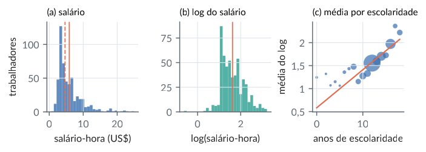
wage1 (\(n=526\)). (a) Salário-hora, com a média (linha contínua) e a mediana (tracejada): assimetria à direita. (b) O logaritmo do salário, quase simétrico. (c) Média do log do salário para cada número de anos de escolaridade (área proporcional ao número de trabalhadores) e a reta de mínimos quadrados: a relação é aproximadamente linear onde há dados.Conhecendo os dados UKgas: estatísticas descritivas
R/cap01/15_dados_ukgas.R
# Cap. 1 -- Conhecendo os dados UKgas: estatísticas descritivas
source(file.path("R", "comum", "descritiva.R"))
g <- read.csv(file.path("dados", "ukgas.csv"))
g$log_cons <- log(g$consumo)
resumo(g, c("consumo", "log_cons"))
por_grupo(g$consumo, paste0("tri", g$trimestre), "consumo")
por_grupo(g$log_cons, paste0("tri", g$trimestre), "log(consumo)")
# Amplitude sazonal (máx - mín dentro do ano), média por década
amp <- function(x) tapply(x, g$ano, function(v) diff(range(v)))
dec <- paste0(10 * (unique(g$ano) %/% 10), "s")
round(rbind(nivel = tapply(amp(g$consumo), dec, mean),
log = tapply(amp(g$log_cons), dec, mean)), 2)Saída
n média dp mín Q1 mediana Q3 máx
consumo 108 338 251 85 153 221 470 1164
log_cons 108 5.579 0.688 4.440 5.032 5.398 6.152 7.060
consumo n média dp mín máx
tri1 27 501 333 160 1164
tri2 27 301.1 147.9 124.9 613.1
tri3 27 166.7 66.4 84.8 347.4
tri4 27 381.3 247.3 116.9 787.6
log(consumo) n média dp mín máx
tri1 27 5.989 0.700 5.076 7.060
tri2 27 5.587 0.507 4.828 6.419
tri3 27 5.040 0.402 4.440 5.850
tri4 27 5.700 0.742 4.761 6.669
1960s 1970s 1980s
nivel 92.66 313.46 720.43
log 0.66 0.98 1.37python/cap01/15_dados_ukgas.py
"""Cap. 1 -- Conhecendo os dados UKgas: estatísticas descritivas"""
import sys
from pathlib import Path
import numpy as np
import pandas as pd
sys.path.insert(0, str(Path(__file__).resolve().parents[1]))
from comum.descritiva import por_grupo, resumo # noqa: E402
g = pd.read_csv(Path(__file__).resolve().parents[2] / "dados"
/ "ukgas.csv")
g["log_cons"] = np.log(g["consumo"])
resumo(g, ["consumo", "log_cons"])
tri = "tri" + g["trimestre"].astype(str)
por_grupo(g["consumo"], tri, "consumo")
por_grupo(g["log_cons"], tri, "log(consumo)")
# Amplitude sazonal (máx - mín dentro do ano), média por década
amp = g.groupby("ano")[["consumo", "log_cons"]].agg(np.ptp)
amp = amp.groupby((10 * (amp.index // 10)).astype(str) + "s").mean()
amp.columns = ["nivel", "log"]
print(amp.T.round(2).to_string())Saída
n média dp mín Q1 mediana Q3 máx
consumo 108 338 251 85 153 221 470 1164
log_cons 108 5.579 0.688 4.440 5.032 5.398 6.152 7.060
consumo n média dp mín máx
tri1 27 501 333 160 1164
tri2 27 301.1 147.9 124.9 613.1
tri3 27 166.7 66.4 84.8 347.4
tri4 27 381.3 247.3 116.9 787.6
log(consumo) n média dp mín máx
tri1 27 5.989 0.700 5.076 7.060
tri2 27 5.587 0.507 4.828 6.419
tri3 27 5.040 0.402 4.440 5.850
tri4 27 5.700 0.742 4.761 6.669
ano 1960s 1970s 1980s
nivel 92.66 313.46 720.43
log 0.66 0.98 1.37Figura: dados ukgas
python/cap01/fig_dados_cap01.py
def fig_ukgas():
g = pd.read_csv(DADOS / "ukgas.csv"); t = g["ano"] + (g["trimestre"] - 1) / 4
fig, (a1, a2, a3) = plt.subplots(1, 3, figsize=(LARG, 2.0))
a1.plot(t, g["consumo"], color=CATEG[0], lw=1); a1.set_xlabel("ano")
a1.set_ylabel("consumo"); titulo(a1, "(a) nível")
a2.plot(t, np.log(g["consumo"]), color=CATEG[2], lw=1); a2.set_xlabel("ano")
titulo(a2, "(b) logaritmo")
for k, (dec, cor) in enumerate(zip([1960, 1970, 1980], CATEG)):
s = g[(g["ano"] >= dec) & (g["ano"] < dec + 10)]
m = np.log(s["consumo"]).groupby(s["trimestre"]).mean()
a3.plot(m.index, m - m.mean(), "o-", ms=3, color=cor, label=f"anos {dec % 100}")
a3.set_xticks([1, 2, 3, 4]); a3.set_xlabel("trimestre")
a3.set_ylabel("desvio do log"); a3.legend(fontsize=6.5)
titulo(a3, "(c) perfil sazonal")
virgula(a1, a2, a3); fig.tight_layout(w_pad=0.6)
salvar(fig, CAP, "dados_ukgas")Trecho de python/cap01/fig_dados_cap01.py, que traz também as importações e o estilo.
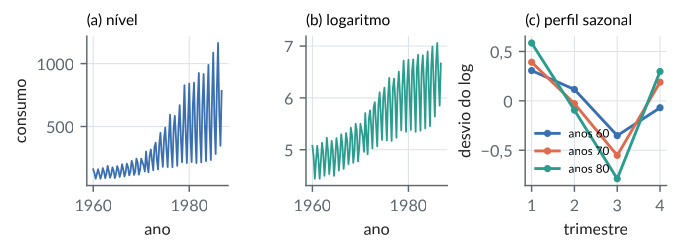
Conhecendo o experimento de aveia
R/cap01/16_dados_aveia.R
# Cap. 1 -- Conhecendo o experimento de aveia
source(file.path("R", "comum", "descritiva.R"))
a <- read.csv(file.path("dados", "yates_oats.csv"))
resumo(a, "yield")
table(variedade = a$gen, dose = a$nitro) # 6 parcelas por casela
por_grupo(a$yield, a$gen, "variedade")
por_grupo(a$yield, a$nitro, "dose")
por_grupo(a$yield, a$block, "bloco")
# Médias das caselas variedade x dose
round(tapply(a$yield, list(a$gen, a$nitro), mean), 1)Saída
n média dp mín Q1 mediana Q3 máx
yield 72 104.0 27.1 53.0 86.0 102.5 121.2 174.0
dose
variedade 0 0.2 0.4 0.6
GoldenRain 6 6 6 6
Marvellous 6 6 6 6
Victory 6 6 6 6
variedade n média dp mín máx
GoldenRain 24 104.5 26.9 60.0 161.0
Marvellous 24 109.8 23.6 63.0 156.0
Victory 24 97.6 30.0 53.0 174.0
dose n média dp mín máx
0 18 79.4 19.4 53.0 117.0
0.2 18 98.9 21.8 64.0 140.0
0.4 18 114.2 22.3 81.0 161.0
0.6 18 123.4 23.0 86.0 174.0
bloco n média dp mín máx
B1 12 90.9 20.4 62.0 126.0
B2 12 95.9 24.8 60.0 132.0
B3 12 96.2 20.6 53.0 121.0
B4 12 135.3 22.8 105.0 174.0
B5 12 98.2 24.0 64.0 133.0
B6 12 107.2 27.0 61.0 149.0
0 0.2 0.4 0.6
GoldenRain 80.0 98.5 114.7 124.8
Marvellous 86.7 108.5 117.2 126.8
Victory 71.5 89.7 110.8 118.5python/cap01/16_dados_aveia.py
"""Cap. 1 -- Conhecendo o experimento de aveia"""
import sys
from pathlib import Path
import pandas as pd
sys.path.insert(0, str(Path(__file__).resolve().parents[1]))
from comum.descritiva import por_grupo, resumo # noqa: E402
a = pd.read_csv(Path(__file__).resolve().parents[2] / "dados"
/ "yates_oats.csv")
resumo(a, ["yield"])
print(pd.crosstab(a["gen"], a["nitro"])) # 6 parcelas por casela
por_grupo(a["yield"], a["gen"], "variedade")
por_grupo(a["yield"], a["nitro"], "dose")
por_grupo(a["yield"], a["block"], "bloco")
# Médias das caselas variedade x dose
print(a.pivot_table("yield", "gen", "nitro").round(1).to_string())Saída
n média dp mín Q1 mediana Q3 máx
yield 72 104.0 27.1 53.0 86.0 102.5 121.2 174.0
nitro 0.0 0.2 0.4 0.6
gen
GoldenRain 6 6 6 6
Marvellous 6 6 6 6
Victory 6 6 6 6
variedade n média dp mín máx
GoldenRain 24 104.5 26.9 60.0 161.0
Marvellous 24 109.8 23.6 63.0 156.0
Victory 24 97.6 30.0 53.0 174.0
dose n média dp mín máx
0.0 18 79.4 19.4 53.0 117.0
0.2 18 98.9 21.8 64.0 140.0
0.4 18 114.2 22.3 81.0 161.0
0.6 18 123.4 23.0 86.0 174.0
bloco n média dp mín máx
B1 12 90.9 20.4 62.0 126.0
B2 12 95.9 24.8 60.0 132.0
B3 12 96.2 20.6 53.0 121.0
B4 12 135.3 22.8 105.0 174.0
B5 12 98.2 24.0 64.0 133.0
B6 12 107.2 27.0 61.0 149.0
nitro 0.0 0.2 0.4 0.6
gen
GoldenRain 80.0 98.5 114.7 124.8
Marvellous 86.7 108.5 117.2 126.8
Victory 71.5 89.7 110.8 118.5Figura: dados aveia
python/cap01/fig_dados_cap01.py
def fig_aveia():
a = pd.read_csv(DADOS / "yates_oats.csv")
vars_ = ["GoldenRain", "Marvellous", "Victory"]; doses = [0, 0.2, 0.4, 0.6]
fig, (a1, a2) = plt.subplots(1, 2, figsize=(LARG, 2.3), gridspec_kw={"width_ratios": [1.3, 1]})
for k, v in enumerate(vars_):
s = a[a["gen"] == v]; dx = (k - 1) * 0.022
a1.scatter(s["nitro"] + dx, s["yield"], s=7, color=CATEG[k], alpha=0.45, lw=0)
m = s.groupby("nitro")["yield"].mean()
a1.plot(m.index + dx, m.values, "o-", ms=3.5, color=CATEG[k], label=v)
a1.set_xticks(doses); a1.set_xlabel("dose de nitrogênio (cwt/acre)")
a1.set_ylabel("produção (1/4 lb por subparcela)"); a1.legend(fontsize=6.5)
titulo(a1, "(a) produção, dose e variedade")
bl = sorted(a["block"].unique())
for j, b in enumerate(bl):
s = a[a["block"] == b]
a2.scatter(np.full(len(s), j) + np.linspace(-0.2, 0.2, len(s)), s["yield"], s=7,
color=CATEG[0], alpha=0.5, lw=0)
a2.plot([j - 0.3, j + 0.3], [s["yield"].mean()] * 2, color=COR["destaque"], lw=1.5)
a2.set_xticks(range(len(bl))); a2.set_xticklabels(bl); a2.set_xlabel("bloco")
titulo(a2, "(b) variação entre blocos")
virgula(a1); a2.yaxis.set_major_formatter(_fmt)
fig.tight_layout(w_pad=0.6); salvar(fig, CAP, "dados_aveia")Trecho de python/cap01/fig_dados_cap01.py, que traz também as importações e o estilo.
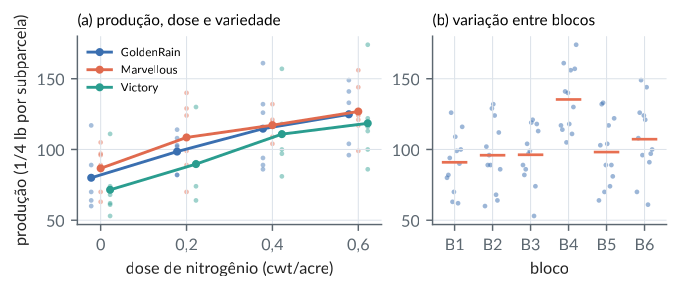
Conhecendo os dígitos manuscritos
R/cap01/17_dados_digitos.R
# Cap. 1 -- Conhecendo os dígitos manuscritos
d <- read.csv(file.path("dados", "digitos.csv"))
X <- as.matrix(d[, -1]); dim(X) # 1797 imagens, 64 pixels
table(d$digito) # classes equilibradas
c(media_pixel = mean(X), frac_zeros = mean(X == 0))
# Tinta por imagem (soma das intensidades) em cada dígito
tinta <- rowSums(X)
round(tapply(tinta, d$digito, mean))
# Pixels que nunca acendem e pixels mais variáveis
sum(apply(X, 2, max) == 0) # sempre zero
v <- apply(X, 2, var)
names(sort(v, decreasing = TRUE))[1:5]Saída
[1] 1797 64
0 1 2 3 4 5 6 7 8 9
178 182 177 183 181 182 181 179 174 180
media_pixel frac_zeros
4.8841646 0.4892877
0 1 2 3 4 5 6 7 8 9
317 313 314 307 311 307 311 303 330 313
[1] 3
[1] "px42" "px43" "px34" "px35" "px44"python/cap01/17_dados_digitos.py
"""Cap. 1 -- Conhecendo os dígitos manuscritos"""
from pathlib import Path
import numpy as np
import pandas as pd
d = pd.read_csv(Path(__file__).resolve().parents[2] / "dados"
/ "digitos.csv")
X = d.drop(columns="digito").to_numpy(float)
print(X.shape) # 1797 imagens, 64 pixels
c = d["digito"].value_counts().sort_index()
print(" ".join(f"{k}:{v}" for k, v in c.items()))
print(f"média por pixel {X.mean():.4f}, fração de zeros "
f"{(X == 0).mean():.4f}")
# Tinta por imagem (soma das intensidades) em cada dígito
tinta = X.sum(axis=1)
m = pd.Series(tinta).groupby(d["digito"]).mean().round().astype(int)
print(" ".join(f"{k}:{v}" for k, v in m.items()))
# Pixels que nunca acendem e pixels mais variáveis
print("sempre zero:", int((X.max(axis=0) == 0).sum()))
v = X.var(axis=0, ddof=1)
print(list(d.columns[1:][np.argsort(-v, kind="stable")[:5]]))Saída
(1797, 64)
0:178 1:182 2:177 3:183 4:181 5:182 6:181 7:179 8:174 9:180
média por pixel 4.8842, fração de zeros 0.4893
0:317 1:313 2:314 3:307 4:311 5:307 6:311 7:303 8:330 9:313
sempre zero: 3
['px42', 'px43', 'px34', 'px35', 'px44']Figura: dados digitos
python/cap01/fig_dados_cap01.py
def fig_digitos():
d = pd.read_csv(DADOS / "digitos.csv"); X = d.drop(columns="digito").to_numpy(float)
y = d["digito"].to_numpy()
fig = plt.figure(figsize=(LARG, 2.2))
gs = fig.add_gridspec(2, 7, width_ratios=[1] * 5 + [1.5, 1.5], wspace=0.15, hspace=0.25)
for k in range(10):
ax = fig.add_subplot(gs[k // 5, k % 5])
ax.imshow(X[np.argmax(y == k)].reshape(8, 8), cmap="Greys", vmin=0, vmax=16)
ax.set_xticks([]); ax.set_yticks([]); ax.grid(False)
a1 = fig.add_subplot(gs[:, 5]); a2 = fig.add_subplot(gs[:, 6])
a1.imshow(X.mean(0).reshape(8, 8), cmap="Greys"); a1.set_title("média", fontsize=8)
im = a2.imshow(X.var(0, ddof=1).reshape(8, 8), cmap="viridis")
a2.set_title("variância", fontsize=8)
for ax in (a1, a2):
ax.set_xticks([]); ax.set_yticks([]); ax.grid(False)
cb = fig.colorbar(im, ax=a2, fraction=0.046, pad=0.04)
cb.ax.tick_params(labelsize=6); cb.ax.yaxis.set_major_formatter(_fmt)
salvar(fig, CAP, "dados_digitos")Trecho de python/cap01/fig_dados_cap01.py, que traz também as importações e o estilo.
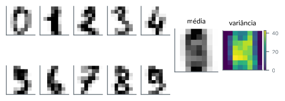
Conhecendo os romances de Jane Austen
R/cap01/18_dados_austen.R
# Cap. 1 -- Conhecendo os romances de Jane Austen
d <- read.csv(file.path("dados", "austen.csv"))
pal <- function(t) {
t <- tolower(t); unlist(regmatches(t, gregexpr("[a-z]+", t)))
}
por_livro <- t(sapply(split(d$texto, d$livro), function(t) {
p <- pal(t); c(palavras = length(p), distintas = length(unique(p)))
}))
por_livro
p <- pal(d$texto); fr <- sort(table(p), decreasing = TRUE)
c(total = length(p), distintas = length(fr),
uma_vez = sum(fr == 1)) # hapax legomena
head(fr, 10)
# Lei de Zipf: frequência x posto é quase constante
k <- c(1, 10, 100, 1000, 10000)
data.frame(posto = k, freq = as.numeric(fr[k]),
freq_x_posto = as.numeric(fr[k]) * k)Saída
palavras distintas
Emma 161973 7093
Mansfield Park 161459 7760
Northanger Abbey 78230 6018
Persuasion 84121 5739
Pride & Prejudice 122817 6259
Sense & Sensibility 120722 6273
total distintas uma_vez
729322 13731 4365
p
the to and of a her i in was it
26357 24050 22517 21181 13411 13151 12062 11220 11217 10238
posto freq freq_x_posto
1 1 26357 26357
2 10 10238 102380
3 100 982 98200
4 1000 72 72000
5 10000 1 10000python/cap01/18_dados_austen.py
"""Cap. 1 -- Conhecendo os romances de Jane Austen"""
import re
from collections import Counter
from pathlib import Path
import pandas as pd
d = pd.read_csv(Path(__file__).resolve().parents[2] / "dados"
/ "austen.csv", keep_default_na=False)
def pal(t):
return re.findall(r"[a-z]+", " ".join(t).lower())
for livro, t in d.groupby("livro")["texto"]:
p = pal(t)
print(f"{livro:<22}{len(p):8d}{len(set(p)):7d}")
fr = Counter(pal(d["texto"]))
f = sorted(fr.values(), reverse=True)
print("total", sum(f), " distintas", len(f),
" uma vez", sum(v == 1 for v in f))
top = [f"{w}:{c}" for w, c in fr.most_common(10)]
print(" ".join(top[:5])); print(" ".join(top[5:]))
# Lei de Zipf: frequência x posto é quase constante
for k in [1, 10, 100, 1000, 10000]:
print(f"posto {k:6d} freq {f[k - 1]:6d} freq x posto "
f"{f[k - 1] * k:7d}")Saída
Emma 161973 7093
Mansfield Park 161459 7760
Northanger Abbey 78230 6018
Persuasion 84121 5739
Pride & Prejudice 122817 6259
Sense & Sensibility 120722 6273
total 729322 distintas 13731 uma vez 4365
the:26357 to:24050 and:22517 of:21181 a:13411
her:13151 i:12062 in:11220 was:11217 it:10238
posto 1 freq 26357 freq x posto 26357
posto 10 freq 10238 freq x posto 102380
posto 100 freq 982 freq x posto 98200
posto 1000 freq 72 freq x posto 72000
posto 10000 freq 1 freq x posto 10000Figura: dados austen
python/cap01/fig_dados_cap01.py
def fig_austen():
d = pd.read_csv(DADOS / "austen.csv", keep_default_na=False)
f = np.array(sorted(Counter(re.findall(r"[a-z]+", " ".join(d["texto"]).lower())).values(),
reverse=True))
fig, (a1, a2) = plt.subplots(1, 2, figsize=(LARG, 2.2), gridspec_kw={"width_ratios": [1, 1.2]})
r = np.arange(1, len(f) + 1)
a1.loglog(r, f, color=CATEG[0], lw=1.2, label="observado")
a1.loglog(r, f[9] * 10 / r, color=COR["destaque"], lw=0.9, ls="--", label=r"freq. $\propto$ 1/posto")
a1.set_xlabel("posto da palavra"); a1.set_ylabel("frequência"); a1.legend(fontsize=6.5)
titulo(a1, "(a) lei de Zipf")
liv = d.groupby("livro")["texto"].apply(lambda t: len(re.findall(r"[a-z]+", " ".join(t).lower())))
a2.barh(range(len(liv)), liv.values / 1000, color=CATEG[2])
a2.set_yticks(range(len(liv))); a2.set_yticklabels(liv.index, fontsize=6.5)
a2.set_xlabel("palavras (milhares)"); titulo(a2, "(b) tamanho dos romances")
a2.xaxis.set_major_formatter(_fmt)
fig.tight_layout(w_pad=0.6); salvar(fig, CAP, "dados_austen")Trecho de python/cap01/fig_dados_cap01.py, que traz também as importações e o estilo.
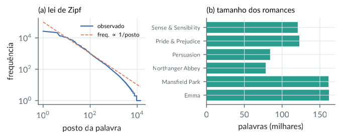
Outras figuras
Figura: bolas lp
python/cap01/fig_cap01.py
def fig_bolas():
ps = [(0.5, r"$p=1/2$ (não é norma)"), (1, r"$p=1$"), (2, r"$p=2$"), (4, r"$p=4$"), (np.inf, r"$p=\infty$")]
th = np.linspace(0, 2 * np.pi, 800)
fig, ax = plt.subplots(figsize=(3.0, 3.0))
cores = [COR["cinza"]] + CATEG[:4]
for (p, rot), cor in zip(ps, cores):
u = np.column_stack([np.cos(th), np.sin(th)])
if np.isinf(p):
nrm = np.abs(u).max(axis=1)
else:
nrm = (np.abs(u) ** p).sum(axis=1) ** (1 / p)
B = u / nrm[:, None]
ax.plot(B[:, 0], B[:, 1], color=cor, lw=1.8 if p >= 1 else 1.2, ls="-" if p >= 1 else "--", label=rot)
ax.set_aspect("equal")
ax.set_xlim(-1.25, 1.25); ax.set_ylim(-1.25, 1.25)
ax.axhline(0, color="#BBB", lw=0.5); ax.axvline(0, color="#BBB", lw=0.5)
ax.set_xticks([-1, 0, 1]); ax.set_yticks([-1, 0, 1])
ax.legend(fontsize=7, loc="upper left", bbox_to_anchor=(1.0, 1.0))
salvar(fig, CAP, "bolas_lp")Trecho de python/cap01/fig_cap01.py, que traz também as importações e o estilo.
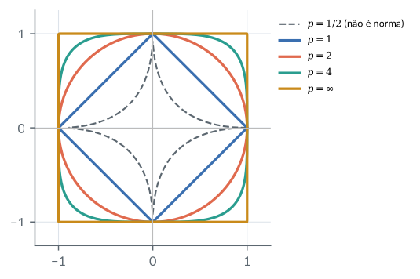
Figura: correlacao cosseno
python/cap01/fig_cap01.py
def fig_correlacao_cosseno():
rng = np.random.default_rng(11)
alvos = [0.9, 0.5, 0.0, -0.6]
fig, eixos = plt.subplots(2, 4, figsize=(LARG, 2.9),
gridspec_kw={"height_ratios": [1.15, 1]})
for j, rho in enumerate(alvos):
z = rng.standard_normal((80, 2))
x = z[:, 0]
y = rho * x + np.sqrt(1 - rho**2) * z[:, 1]
r = np.corrcoef(x, y)[0, 1]
ax = eixos[0, j]
ax.scatter(x, y, s=7, color=CATEG[0], alpha=0.75, lw=0)
ax.set_title(f"$r = {r:.2f}$", fontsize=9)
ax.set_xticks([]); ax.set_yticks([])
ax.set_aspect("equal", adjustable="datalim")
ax.set_xlabel("$x$", fontsize=8, labelpad=1); ax.set_ylabel("$y$", fontsize=8, labelpad=1)
# diagrama do ângulo entre x - x̄ e y - ȳ
ax = eixos[1, j]
th = np.arccos(np.clip(r, -1, 1))
seta(ax, (0, 0), (1, 0), CATEG[0])
seta(ax, (0, 0), (np.cos(th), np.sin(th)), CATEG[1])
ax.add_patch(Wedge((0, 0), 0.32, 0, np.degrees(th), color=COR["ouro"], alpha=0.35, lw=0))
ax.text(0.5, -0.16, r"$\mathbf{x}-\bar{x}\mathbf{1}$", fontsize=7, ha="center", va="top", color="#333")
ax.text(np.cos(th) * 1.08, np.sin(th) * 1.08 + 0.04, r"$\mathbf{y}-\bar{y}\mathbf{1}$",
fontsize=7, ha="center", color="#333")
ax.text(0.42 * np.cos(th / 2), 0.42 * np.sin(th / 2), f"{np.degrees(th):.0f}°",
fontsize=7, ha="left", va="bottom", color="#333")
ax.set_xlim(-1.15, 1.25); ax.set_ylim(-0.35, 1.25)
ax.set_aspect("equal"); ax.axis("off")
fig.tight_layout(h_pad=0.4)
salvar(fig, CAP, "correlacao_cosseno")Trecho de python/cap01/fig_cap01.py, que traz também as importações e o estilo.
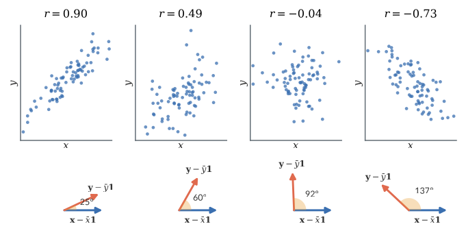
Figura: legendre abs
python/cap01/fig_cap01.py
def fig_legendre():
from numpy.polynomial import legendre as L
t = np.linspace(-1, 1, 801); f = np.abs(t)
fig, (a1, a2) = plt.subplots(1, 2, figsize=(LARG, 2.2))
a1.plot(t, f, color="#222", lw=1.8, label="$f(t)=|t|$")
erros = []
graus = range(0, 21, 2)
for d in graus:
# coeficientes de Legendre por quadratura de Gauss
xq, wq = L.leggauss(200)
c = np.array([(2 * k + 1) / 2 * np.sum(wq * np.abs(xq) * L.legval(xq, np.eye(k + 1)[k])) for k in range(d + 1)])
pd_ = L.legval(t, c)
erros.append(np.sqrt(np.sum(wq * (np.abs(xq) - L.legval(xq, c)) ** 2)))
if d in (2, 4, 10):
a1.plot(t, pd_, lw=1.3, label=f"$\\Pi_{{\\mathcal{{P}}_{{{d}}}}}f$",
color={2: CATEG[1], 4: CATEG[2], 10: CATEG[0]}[d])
a1.legend(fontsize=7, loc="upper center")
a1.set_title("(a) projeções ortogonais em $\\mathcal{P}_d$", fontsize=8.5, loc="left")
a2.semilogy(list(graus), erros, "o-", color=CATEG[0], ms=4)
a2.set_xlabel("grau $d$"); a2.set_ylabel("$\\|f-\\Pi_{\\mathcal{P}_d}f\\|$")
a2.set_title("(b) o erro tende a zero, mas nunca se anula", fontsize=8.5, loc="left")
fig.tight_layout()
salvar(fig, CAP, "legendre_abs")Trecho de python/cap01/fig_cap01.py, que traz também as importações e o estilo.
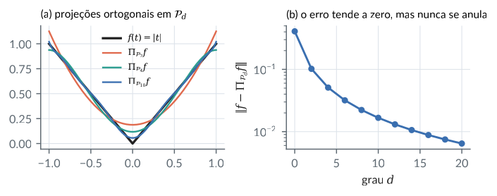